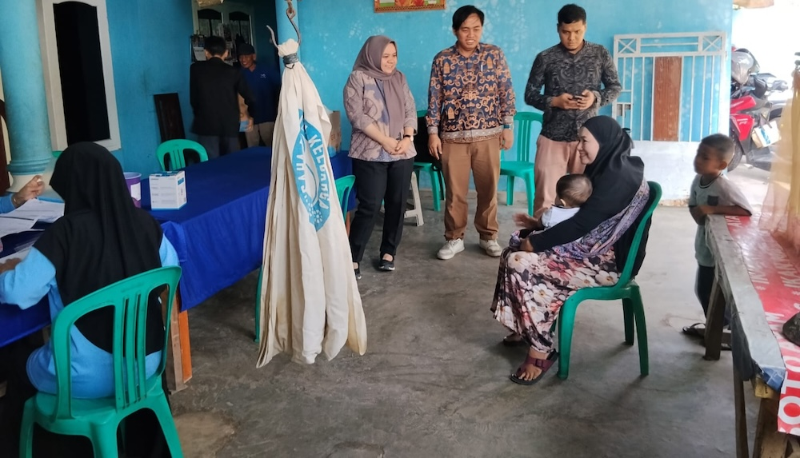

Tingkatkan Layanan Kesehatan Desa, Dosen Teknik Informatika Itera Luncurkan Aplikasi PosyanduKu
Editor: Rudiyansyah | | Kategori: Berita

ITERA NEWS – Tim Pengabdian kepada Masyarakat (PkM) Program Studi Teknik Informatika, Fakultas Teknologi Industri, Institut Teknologi Sumatera (Itera) melaksanakan kegiatan digitalisasi layanan kesehatan di Desa Way Huwi, Selasa, 12 Mei 2026. Kegiatan yang berlangsung di Posyandu Mawar 4 ini berfokus pada penguatan pemantauan kesehatan ibu dan balita melalui aplikasi PosyanduKu.
Aplikasi PosyanduKu merupakan inovasi tim dosen Teknik Informatika Itera yang dirancang untuk mentransformasi pencatatan manual menjadi sistem digital terintegrasi. Tim PkM diketuai Eko Dwi Nugroho, S.Kom., M.Cs., dengan anggota Aidil Afriansyah, S.Kom., M.Kom., Muhammad Habib Algifari, S.Kom., M.TI., Ilham Firman Ashari, S.Kom., M.T., Amirul Iqbal, S.Kom., M.Eng., Miranti Verdiana, M.Si., Alya Khairunnisa Rizkita, S.Kom., M.Kom., Hafiz Budi Firmansyah, S.Kom., M.Cs., dan Arkham Zahri Rakhman, S.Kom., M.Kom. Kegiatan ini juga melibatkan mahasiswa Muklis Mustaqim, Faris Pratama, dan Aditya Wahyu Suhendar dalam pendampingan teknis.
Melalui aplikasi tersebut, kader posyandu dapat mengelola data ibu hamil, memantau tumbuh kembang balita sesuai standar WHO, serta mengatur jadwal imunisasi secara lebih sistematis melalui perangkat seluler.
Kegiatan diikuti oleh masyarakat dan kader posyandu setempat bersama bidan desa. Kehadiran aplikasi ini dinilai membantu mempermudah pencatatan dan mempercepat deteksi dini risiko kesehatan. Data yang dihimpun juga dirancang dapat terintegrasi dengan dashboard pemantauan bagi fasilitas layanan kesehatan.
Ketua tim, Eko Dwi Nugroho, menyampaikan bahwa program ini akan berlanjut pada tahap pendampingan dan penyempurnaan sistem berdasarkan masukan pengguna selama masa implementasi.
Melalui kegiatan ini, Itera terus berkomitmen mendukung peningkatan kualitas layanan masyarakat berbasis teknologi sebagai bagian dari implementasi Tri Dharma Perguruan Tinggi. (Rilis/Humas)